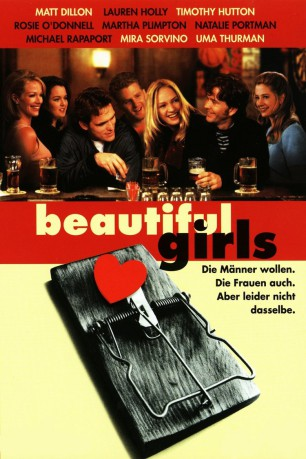

#4158 Beautiful Girls
 
 IMDB-Wertung: 7.2 / 10
IMDB-Wertung: 7.2 / 10  Tomatometer: 79
Tomatometer: 79  Metascore: 0
Metascore: 0 
Mehrere Jahre nach dem Schulabschluss treffen sie Freunde Tommy Rowland, Willie Conway, Paul Kirkwood, Andera und Darian Smalls bei einem Klassentreffen in ihrer Heimatstadt Knights Ridge wieder. Zu Schulzeiten lag die Zukunft wie ein offenes Feld vor Ihnen, das sie nur noch bestellen mussten, jetzt haben sich Ängste und Sorgen in die vormals optimistische Stimmung gedrängt. Die ehemaligen Jugendfreunde stehen an der Schwelle zu wichtigen Entscheidungen, die ihr Leben bestimmen werden. So fragt sich der als Musiker arbeitende Conway, ob er die Anwältin Tracy Stover heiraten soll. Auch seine Freunde müssen sich überlegen, wie es auf privatem Gebiet weitergeht. Alte Emotionen kommen während des Treffens wieder hoch und führen zu Konflikten, da sie mit bestehenden Beziehungen kollidieren.
Jahr: 1996
Dauer: 119 Minuten
FSK: 12
Land: USA Studio: MiramaxTonspuren: DD2.0 - ,
Untertitel:
Auflösung: 1080p (1920x1040) Größe: 7526 MB
Genre: Komödie, Drama, Liebe
Regisseur:  Ted Demme
Ted Demme
Drehbuch: George Miller
Soundtrack:
Darsteller:
 Matt Dillon als Tommy 'Birdman' Rowland
Matt Dillon als Tommy 'Birdman' Rowland Noah Emmerich als Michael 'Mo' Morris
Noah Emmerich als Michael 'Mo' Morris Annabeth Gish als Tracy Stover
Annabeth Gish als Tracy Stover Lauren Holly als Darian Smalls
Lauren Holly als Darian Smalls Timothy Hutton als Willie Conway
Timothy Hutton als Willie Conway Rosie O'Donnell als Gina Barrisano
Rosie O'Donnell als Gina Barrisano Max Perlich als Kev
Max Perlich als Kev Martha Plimpton als Jan
Martha Plimpton als Jan Natalie Portman als Marty
Natalie Portman als Marty Michael Rapaport als Paul Kirkwood
Michael Rapaport als Paul Kirkwood Mira Sorvino als Sharon Cassidy
Mira Sorvino als Sharon Cassidy Uma Thurman als Andera
Uma Thurman als Andera Pruitt Taylor Vince als Stanley 'Stinky' Womack
Pruitt Taylor Vince als Stanley 'Stinky' Womack Sam Robards als Steve Rossmore
Sam Robards als Steve Rossmore David Arquette als Bobby Conway
David Arquette als Bobby Conway Adam LeFevre als Victor
Adam LeFevre als Victor John Carroll Lynch als Frank Womack
John Carroll Lynch als Frank Womack Tom Gibis als Peter the Eater
Tom Gibis als Peter the Eater- Greg Dulli als Lead Singer, Afghan Whigs
 John Scurti als Ticket Agent
John Scurti als Ticket Agent Frank Anello als Irv
Frank Anello als Irv- Rachel Oliva als High School Alumna , uncredited
- Tomas Settell als Male Nurse , uncredited
- Anne Bobby als Sarah Morris
 Richard Bright als Dick Conway
Richard Bright als Dick Conway- Sarah Katz als Kristen Rossmore
- Camille D'Ambrose als Sharon's Mother
- Martin Ruben als Chip
- Allison Levine als Waitress at Moonlight Mile
- Earl R. Burt als Bartender
- Trent Nicholas Thompson als Michael Morris, Jr
- Nicole Ranallo als Cheryl Morris
- Joyce Lacey als Reunion Classmate #1
- Matthew Nathan Castens als Reunion Classmate #2
- Anne W. Erickson als Coffee Shop Waitress
- Oliver Osterberg als Drinker #1
- Sterling Robson als Drinker #2
- Edward Kaspszak als Drinker #3
- Herbie Ade als Bar Owner
- Ben Gooding als Customer
- Lucky the Saint Bernard als Elle MacPherson
- Tammara Melloy als Bowler , uncredited
- Lori J. Ness als Women on the Street , uncredited
Datei: X:\1996\Beautiful Girls (1996, FSK12, 1920x1040).mkv seit 27.07.2016
Festplatte: HD 1996-2002
 Es gibt insgesamt 78 Filme in der Gruppe '1996'
Es gibt insgesamt 78 Filme in der Gruppe '1996'